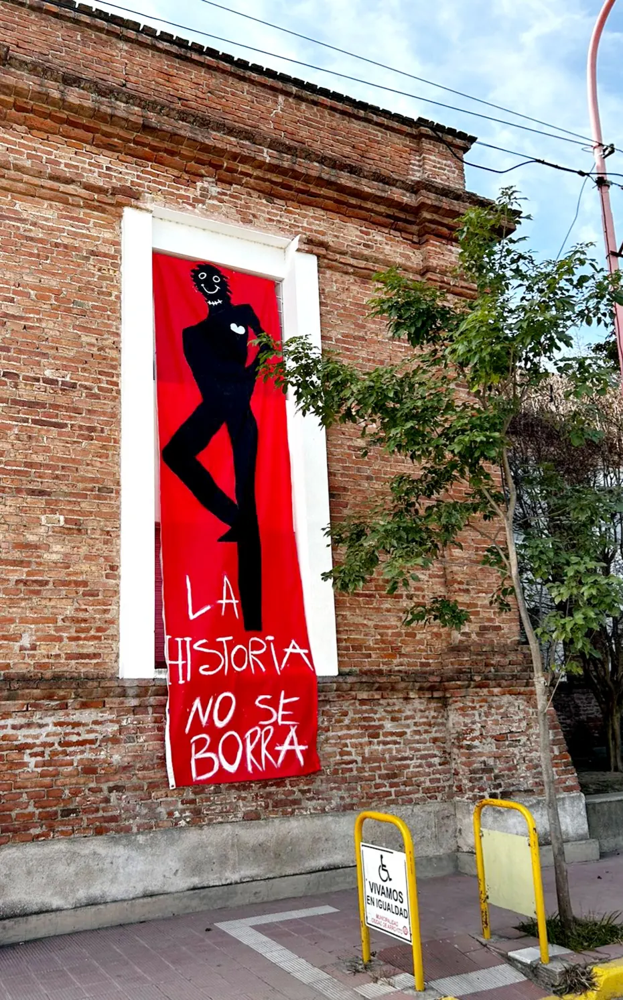

01
Interacción
Aprender con otros, escuchar, dialogar y construir desde el encuentro.

Más de un siglo de educación, comunidad y compromiso con Arroyito.
El Instituto Nuestra Señora de la Merced nace el 1º de octubre de 1887, fruto de la vocación del Padre José León Torres. Junto a diez religiosas, inició una misión educativa basada en la formación integral y en los valores mercedarios.
Con el paso de las décadas, la institución fue ampliando su presencia y sus propuestas educativas, acompañando los cambios de la comunidad y las nuevas necesidades de cada generación.
La historia del INSM no es solamente una sucesión de fechas: está formada por estudiantes, familias, docentes, religiosas, proyectos, celebraciones y experiencias que fueron construyendo una identidad compartida.
Algunos momentos que forman parte del recorrido institucional.
Se inicia la obra educativa del Instituto Nuestra Señora de la Merced.
La institución continúa creciendo y fortaleciendo su presencia educativa.
La propuesta educativa se amplía acompañando el crecimiento de Arroyito.
La comunidad incorpora nuevas formas de enseñar, aprender y participar.
El INSM continúa construyendo una educación vinculada con su tiempo.
Nuestra identidad se expresa en la manera en que aprendemos, participamos y construimos comunidad.
Aprender con otros, escuchar, dialogar y construir desde el encuentro.
Ser parte activa de la vida institucional y asumir responsabilidades.
Reconocer al otro y comprometerse con una comunidad más justa y cercana.
Conocé también nuestros niveles y los proyectos que forman parte de la vida actual del INSM.
Explorar niveles ↗